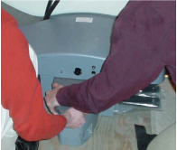
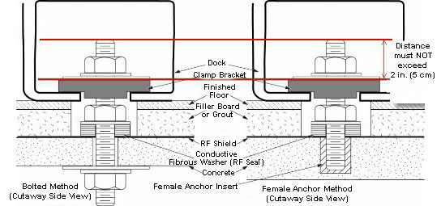
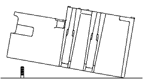
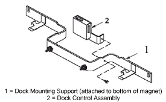
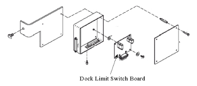
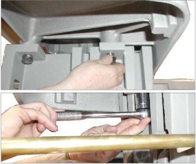
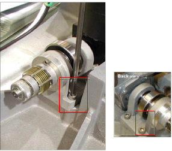
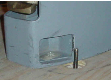
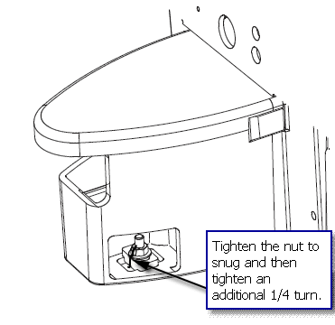

Operating Documentation
Direction 5133330-3, Rev# 14
Signa EXCITE HD 3.0T Service Methods
Module Version 11.0, Version Date 11/2/10
Operating Documentation |
| Required Persons | Preliminary Reqs | Procedure | Finalization |
|---|---|---|---|
| 2 | Not Applicable | 1 hour | Not Applicable |
Procedure for replacement of the following dock components for 1.5T and 3.0T LCC Magnets:
Dock limit switch board
Dock gear motor and clutch assembly
| Item | Qty | Effectivity | Part# | Manufacturer | |
|---|---|---|---|---|---|
| Nonferrous Adjustable Wrench | 1 | - | - | - | |
| Nonferrous Flat-Head Screwdriver | 1 | - | - | - | |
| Socket Wrench | 1 | - | - | - | |
| Allen Screwdriver | 1 | - | - | - | |
| ||||
| FATAL ELECTRIC SHOCK HAZARD! | ||||
| TO PREVENT FATAL ELECTRIC SHOCK, DISCONNECT POWER FROM THE PDU BEFORE Performing This PROCEDURE. | ||||
| PERFORM LOCK-OUT / TAG-OUT (LOTO) PROCEDURE PER General Electric OSHA LOto REQUIREMENTS LISTED IN THE FIELD SERVICE EHS MANUAL and TRAINING 2000 (P/N 2135387-200). |
| ||||
| POSSIBLE PERSONAL INJURY! | ||||
| THIS PROCEDURE REQUIRES movement OF FERROUS MATERIAL IN CLOSE PROXIMITY TO THE MAGNET. | ||||
| two MR SAFETY TRAINED PERSONNEL are required at all times. |
| ||||
| Personal injury and equipment damage! | ||||
| Strong Magnetic Field present. | ||||
| When servicing any magnetic equipment, it is critically
important that the service engineer consciously plan the path to be
taken when moving highly ferrous devices in the magnet environment.
the path should be as far from the magnet as practical. Safety Requirements:
When planning a service path, it is critical that the path be clear and sufficiently wide. Ensure that there are no trip hazards, obstacles, clutter, slippery surfaces or other items even partially restricting the path. If there are portable obstacles in a path, remove them from the area and replace them after the service action is completed. It is required to walk the path prior to beginning service to ensure that there is sufficient space through which to pass for yourself and the object being serviced. |
| ||||
| FATAL ELECTRIC SHOCK HAZARD! | ||||
| TO PREVENT FATAL ELECTRIC SHOCK, DISCONNECT POWER FROM THE PDU BEFORE Performing This PROCEDURE. | ||||
Perform LOTO on the appropriate PDU:
(For Signa EXCITE 1.5T, 11.x Systems - Direction 2333500) TEAL Power Distribution Unit (PDU), PHOENIX Power Distribution Unit (ACGD and GRFD-OpenSpeed), PHOENIX PDU with Plastic Breaker Cover-Subsystem Lockout, Standard Power Distribution Unit (PDU), or Compact Power Distribution Unit (PDU).
(For Signa EXCITE HD 1.5T & 3.0T, 12.x Systems - Directions 5133315 & 5133330) PHOENIX Power Distribution Unit (ACGD and GRFD-OpenSpeed) or PHOENIX PDU with Plastic Breaker Cover-Subsystem Lockout.
(For Signa EXCITE 3.0T, 11.x Systems - Direction 2389160) PHOENIX Power Distribution Unit (ACGD and GRFD-OpenSpeed), PHOENIX PDU with Plastic Breaker Cover-Subsystem Lockout, or Lockout / Tagout for Pen Panel, Patient Blower, and Magnet Room.
Undock the Patient Table and remove it from the Magnet Room.
Disconnect the two cables attached to the Dock. These should be the runs going to the Dock Assembly (MG2 A29) and the Dock Limit Switch (MG2 A31).
Loosen the bolts attaching the dock assembly at the front and to the right and left brackets. (See illustration below.)
Illustration 1: Loosen Dock Attachment Bolts

| ||||
| POSSIBLE PERSONAL INJURY! | ||||
| The Dock Contains Ferrous Materials. | ||||
| FROM THIS POINT OF THE PROCEDURE FORWARD, DOWNWARD PRESSURE MUST BE CONTINUOUSLY APPLIED TO THE DOCK TO PREVENT IT FROM BEING PULLED INTO THE MAGNET BORE. |
While applying pressure to the top of the dock (as shown below), completely remove all dock attachment bolts.
Illustration 2: Applying Constant Pressure to Dock

There are two methods for clearing the anchor stud out of the path of the dock assembly:
Preferred Method: If the site has followed the Pre-Installation Manual, the top portion of the stud should be removable so the dock remains flush with the floor during removal.
If the site has an anchor stud that protrudes vertically from the floor and cannot be removed, a nonconformance must be raised with the customer, and the anchor must be fixed to comply with the Pre-Installation Manual prior to any future servicing of the dock. To fix the anchor stud this time:
Measure the height of the anchor stud as indicated in the illustration below. If the height exceeds 2 inches (5 cm), the magnet must be ramped down prior to removing or installing the Dock as there is significant risk of the magnet attracting the Dock if it needs to be raised more than 2 inches (5 cm).
Illustration 3: Measuring Height of Anchor Stud

Use two people to pull the Dock away from the magnet until the stud in the front is hitting the inner frame.
Use two people to lift the Dock just enough to clear the top of the stud in the floor as shown in illustration below. Pull the dock away from the magnet as far as possible.
Illustration 4: Lifting Dock Enough to Clear Floor Stud

Replace the Dock on the floor immediately to the side of the anchor stud as shown.
Illustration 5: Replacing Dock to Left of Floor Stud

When the distance between the Dock and the magnet is at least equivalent to the distance between the magnet and where the foot of the patient table would normally be located, both field engineers may slowly lift the Dock from the floor and exit the Magnet Room.
| NOTE: | It should not be extremely difficult for two FEs to pull
the Dock away from the magnet once all bolts are removed. If difficulty
is encountered, check that the brackets are not caught against the
front of the magnet. (See illustration below.) Illustration 6: Interference Between Bracket and Magnet
|
With two field engineers, one holding each side of the dock, slide the Dock away from the magnet front to where the foot of the patient table would normally be located.
When a safe distance away from the magnetic field (at least as far as the foot end of the patient table), two field engineers may slowly lift the Dock from the floor and exit the Magnet Room.
Only proceed with removing the Dock Limit Switch after removal of the Dock is completed in Removal of Dock.
Remove the Dock Control Assembly referring to the illustration below.
Illustration 7: Removal of Dock Control Assembly

Once the Dock Control Assembly is detached from the Dock Mounting Support, perform the remainder of this replacement procedure outside of the Magnet Room.
Access the circuit board internal to the Dock Control Assembly referring to the illustration below.
Illustration 8: Removal and Replacement of Dock Limit Switch Board

Replace the Dock Limit Switch Board as shown above.
Reassemble the Dock Control Assembly as shown in Illustration 7.
| ||||
| possible personal injury! | ||||
| TO OPPOSE ANY PULL FROM THE MAGNET, FIELD ENGINEERS MUST APPLY CONTINUOUS DOWNWARD PRESSURE TO THE TOP OF THE DOCK EVEN WHEN LIFTING THE DOCK IN the following STEP. | ||||
| DO NOT PLACE ANY PART OF THE HUMAN BODY IN THE PATH BETWEEN THE DOCK AND THE MAGNET. |
Follow the instructions in Installation of Dock to install the Dock in the Magnet Room.
| ||||
| POSSIBLE PERSONAL INJURY! | ||||
| THE MOTOR CONTAINS FERROUS MATERIALS. | ||||
| THE MOTOR REPLACEMENT MUST BE PERFORMED OUTSIDE OF THE MAGNET ROOM. |
Only proceed with removing Motor and Clutch Assembly after removal of Dock is completed in Removal of Dock.
Remove the upper cover of the dock by unbolting the four hex bolts as shown.
Illustration 9: Removing Hex Bolts from Under Dock Cover

Slightly lift the cover and disconnect all electrical connections between the cover and the base of the dock assembly. (The connections will be the ground connection for the motor and the harness for the dock motor.)
Remove the dock cover from the base.
Disconnect the motor's ground lug from the cover as shown.
Illustration 10: Motor Ground Lug Removal

Remove the four mounting screws for the motor as shown.
Illustration 11: Removing Motor Mounting Screws

Remove existing motor, and install replacement.
Attach motor by replacing the four mounting screws for the motor. (See Illustration 11 for the location of screws.)
Attach the motor's ground lug to the cover. (See Illustration 10.)
Replace the dock cover on the base.
Reconnect all electrical connections between the cover and the base of the dock assembly. (The connections are the ground connection for the motor and the harness for the dock motor.)
Replace the upper cover of the dock and secure by replacing the four hex bolts. (See Illustration 9.)
| ||||
| POSSIBLE PERSONAL INJURY! | ||||
| THIS PROCEDURE REQUIRES REMOVAL OF FERROUS MATERIAL IN CLOSE PROXIMITY TO THE MAGNET. | ||||
| two Safety trained personnel are required at all times. |
With two field engineers, one holding each side of the Dock, enter the Magnet Room and place the Dock on the floor where the foot of the patient table would normally be located.
With two field engineers, one applying vertical downward pressure to each side of the Dock, slide the Dock toward the magnet front.
There are two methods to position the Dock to clear the floor stud:
If the site followed the Pre-Installation Manual, it should be possible to remove the top portion of the stud when reinstalling the dock. Continue to maintain pressure on the top of the dock, while carefully sliding the dock against the base of the magnet, and reinstall the top portion of the anchor stud.
If the site has an anchor stud that protrudes vertically from the floor and cannot be removed, a nonconformance must be raised with the customer and the anchor must be fixed to comply with the Pre-Installation Manual prior to any future servicing of the Dock. To fix the anchor stud this time:
Measure the height of the anchor stud as indicated in the illustration below. If the height exceeds 2 inches (5 cm), the magnet must be ramped down prior to removing or installing the Dock as there is significant risk of the magnet attracting the Dock if it needs to be raised more than 2 inches (5 cm).
Illustration 12: Measuring Height of Anchor Stud
While maintaining pressure to the top of the Dock, position the Dock against the base of the magnet to the side of the floor stud at the front of the Dock.
Lift the Dock just enough to clear the top of the stud in the floor as shown in Illustration 4.
While rotating the Dock, align the hole at the base of the Dock with the stud and place the Dock down into position. (The illustration below shows the dock hole to the side of the stud, but it is placed over the anchor stud.)
Illustration 13: Placement of Dock

Tighten the nut onto the anchor stud as explained below. (Excessive tightening may result in the stud being pulled from the floor.)
Illustration 14: Tightening Nut

Use the attachment bolts to secure the Dock at the front stud and side brackets of the magnet as shown below.
Illustration 15: Securing Dock to Magnet

Connect the cable to the Dock Assembly (MG2 A29) and to the Dock Limit Switch (MG2 A31).
Remove LOTO and restore power.
Align and Dock the table.
Ensure that the dock Motor On Switch operates properly when the Table Up pedal is pressed.
No finalization steps.